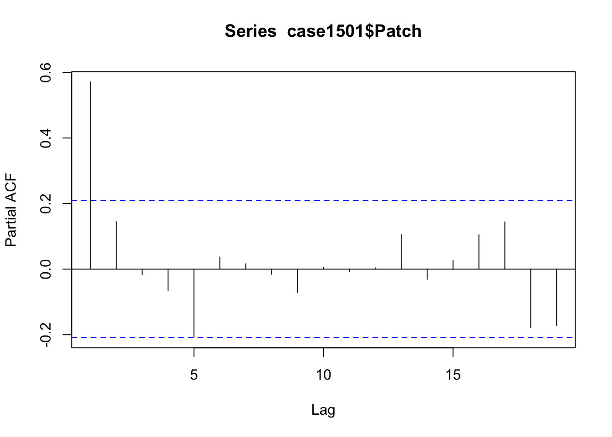
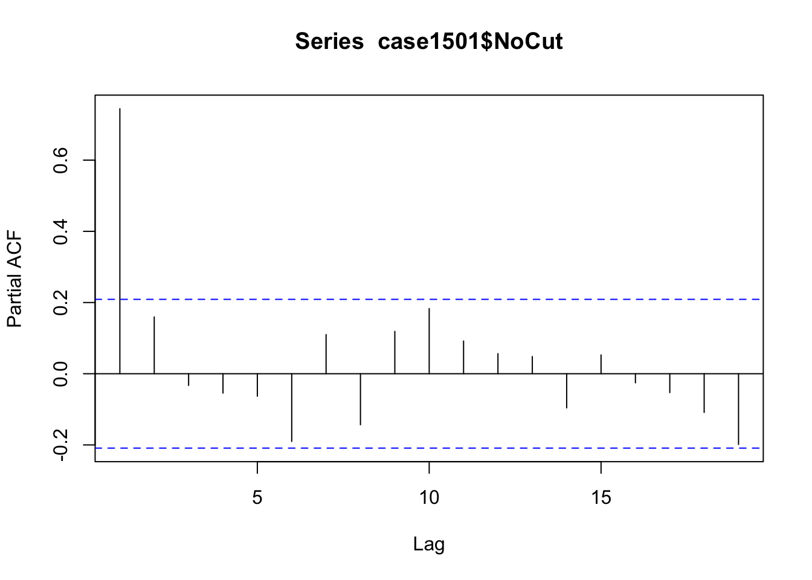
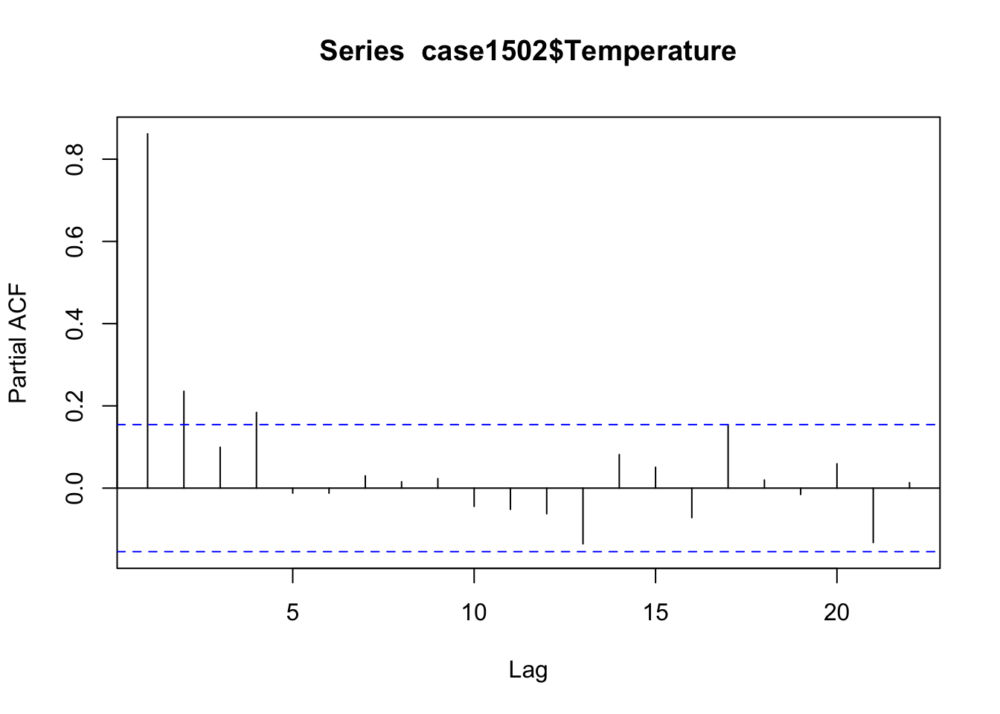

library(Sleuth3)
library(ggplot2)
library(orcutt)
install.packages("~/Downloads/orcutt_2.3.tar", repos = NULL, type = "source")Lab 10: Serial Correlation
Introduction
In this lab, we will explore the concept of serial correlation, often also referred to as autocorrelation. When data points are correlated with themselves at different time lags, many of our usual statistical methods (e.g., ordinary least squares, standard t-tests) must be adjusted. Here, we’ll focus on:
- Estimating the pooled first serial correlation coefficient.
- Adjusting the standard error of a difference in means for serial correlation.
- Diagnosing time dependence using partial autocorrelation plots.
- Using the Cochrane–Orcutt procedure to fit a regression model when data exhibit AR(1) serial correlation.
Serial correlation is common in time series or repeated-measures scenarios. Imagine observing a person’s daily step count: today’s step count is often more like yesterday’s step count than a random guess. This “memory” in the data is what we call serial correlation.
Think of serial correlation like your energy levels on consecutive days. If you’re energetic on Monday, there’s a decent chance you’ll also be energetic on Tuesday (positive autocorrelation). This dependency over time means we can’t treat each day completely independently.
1. Setup
We’ll use R throughout this lab. A script file named Lab10_TS.r (which parallels this write-up) contains all relevant commands. Before you begin:
- Install necessary packages such as
orcutt, which may not be on CRAN for newer versions of R. - Load libraries:
Sleuth3,ggplot2,orcutt, and any other packages we might need.
Below is sample code to install orcutt from a local file. Modify the file path as needed.
Because our data might not be independent, we use specialized methods. If you suspect your data violate the usual independence assumptions, remember that more advanced methods may be appropriate. The techniques here (e.g., Cochrane–Orcutt) are primarily illustrative for simple AR(1) scenarios.
Think of installing these packages like gathering special tools for cooking. For certain recipes (i.e., statistical analyses), you need specialized utensils (packages) to properly handle the ingredients (data with potential autocorrelation).
2. Estimating the Pooled First Serial Correlation Coefficient
We’ll use data from Case Study 15.1.1 regarding two watersheds: Patch and NoCut. We assume each follows an AR(1) model:
\[ \mu\{Y_t - \nu \mid Y_1,\dots,Y_{t-1}\} \;=\; \alpha \,(Y_{t-1}-\nu), \]
where \(\alpha\) is the first serial correlation coefficient (also known as lag-1 autocorrelation).
2(a) Obtain Sample Variance and Lag-1 Autocovariance
In R, we can use the acf() function with type="covariance" and lag.max=1 to extract the necessary information for each time series (Patch and NoCut). Then we adjust because acf() reports these estimates using \(n\) in the denominator, while standard sample estimates use \(n-1\).
acf_Patch <- acf(case1501$Patch, lag.max = 1,
type = "covariance", plot = FALSE)$acf
acf_NoCut <- acf(case1501$NoCut, lag.max = 1,
type = "covariance", plot = FALSE)$acf
n <- nrow(case1501)
c_Patch <- acf_Patch * n / (n - 1)
c_NoCut <- acf_NoCut * n / (n - 1)
c_Patch # First element is var, second is cov for Patch, , 1
[,1]
[1,] 1.6371147
[2,] 0.9350965c_NoCut # First element is var, second is cov for NoCut, , 1
[,1]
[1,] 1.1894762
[2,] 0.8855766Think of the acf() output like two “ingredients” in each bowl: (1) variance “base,” (2) covariance “topping.” We combine them carefully by scaling with \(\frac{n}{n-1}\) to make them standard.
2(b) Pooled Variance
We can pool the variance estimates (the first element in each of c_Patch and c_NoCut). Denote this pooled variance as \(c_0\):
c_0 <- ((n - 1) * c_Patch[1] + (n - 1) * c_NoCut[1]) / (2 * (n - 1))
c_0[1] 1.4132952(c) Pooled Lag-1 Autocovariance
Similarly, to get the pooled lag-1 autocovariance, we look at the second element:
c_1 <- ((n - 1) * c_Patch[2] + (n - 1) * c_NoCut[2]) / (2 * (n - 1))
c_1[1] 0.91033662(d) Pooled Autocorrelation
The pooled autocorrelation is then:
\[ r_1 \;=\; \frac{c_1}{c_0}. \]
In R:
r_1 <- c_1 / c_0
r_1[1] 0.6441233If you see something around 0.644, that indicates a moderate positive serial dependence.
Think of \(r_1\) like a “stickiness” factor. If \(r_1\) is near 1, it’s like a glue that strongly binds current observations to their past values. If it’s near 0, past and current observations are barely sticking together.
3. Adjusting \(\text{SE}(Y_C - Y_U)\) for Serial Correlation
When we conduct a two-sample comparison for means from dependent data, our usual standard error (SE) formula:
\[ \text{SE}(Y_1 - Y_2) \;=\; s_p \sqrt{\frac{1}{n_1} + \frac{1}{n_2}}, \]
tends to underestimate variability in the presence of positive autocorrelation. We therefore multiply it by:
\[ \sqrt{\frac{1 + r_1}{1 - r_1}}. \]
3(a) Inflation Factor for SE
adj_factor <- sqrt((1 + r_1) / (1 - r_1))
adj_factor[1] 2.149401This factor will be \(>1\) if \(r_1>0\). The closer \(r_1\) is to 1, the larger the factor.
3(b) Adjusted Standard Error
We combine the pooled variance \(c_0\), our sample sizes \(n\) for each watershed (both are 88), and the inflation factor:
se <- adj_factor * c_0 * sqrt(1/n + 1/n)
se[1] 0.4579563Compare to the Sleuth text for an example. Essentially, we’re “blowing up” the old SE to account for that serial correlation.
Imagine you have a rubber band measuring distances. If your data “snap back” and are correlated over time, you need a sturdier rubber band (larger SE) to capture the true uncertainty.
4. Diagnosing Time Dependence via Partial Autocorrelation Plots
Partial autocorrelation plots (PACFs) help identify how a data point relates to each prior time lag, after controlling for any shorter lags. We can check the PACF of Patch, NoCut, and the Temperature series from Case 15.1.2:
pacf(case1501$Patch, plot = TRUE)
pacf(case1501$NoCut, plot = TRUE)
pacf(case1502$Temperature, plot = TRUE)
If the PACF shows a sharp cutoff after lag 1, it suggests an AR(1) model is reasonable. Always verify assumptions, though—real-world data might have more complex autocorrelation structures.
Think of partial autocorrelation like checking how your mood today depends on each specific day in the past, ignoring the impacts of intermediate days. If only yesterday matters, that’s an AR(1) scenario.
5. Cochrane–Orcutt Procedure for AR(1) Data
Finally, let’s apply the Cochrane–Orcutt approach to the Temperature data in Case 15.1.2, which also appear to be AR(1). We model Temperature as a function of time and a quadratic term:
case1502$time <- (case1502$Year - 1900) / 100
# Ordinary least squares fit
temp_lm <- lm(Temperature ~ time + I(time^2), data = case1502)
# Cochrane–Orcutt adjustment
CO_lm <- cochrane.orcutt(temp_lm)
summary(CO_lm)Call:
lm(formula = Temperature ~ time + I(time^2), data = case1502)
Estimate Std. Error t value Pr(>|t|)
(Intercept) -0.321019 0.031780 -10.101 < 2.2e-16 ***
time 0.099649 0.094080 1.059 0.2911
I(time^2) 0.585209 0.123600 4.735 4.868e-06 ***
---
Signif. codes: 0 '***' 0.001 '**' 0.01 '*' 0.05 '.' 0.1 ' ' 1
Residual standard error: 0.1209 on 157 degrees of freedom
Multiple R-squared: 0.4087 , Adjusted R-squared: 0.4012
F-statistic: 54.3 on 2 and 157 DF, p-value: < 1.218e-18
Durbin-Watson statistic
(original): 0.80793 , p-value: 3.785e-15
(transformed): 2.15902 , p-value: 8.024e-01The Cochrane–Orcutt procedure transforms the data to remove autocorrelation, then refits the model. It provides an estimate of \(\alpha\) along with adjusted regression coefficients.
Think of Cochrane–Orcutt as adjusting a recipe by soaking certain ingredients (the data) to remove extra salt (autocorrelation). After this “soak,” you can re-cook (re-run regression) and get a better, more balanced result (more valid inference).
Conclusion
In this lab, we:
- Estimated and interpreted the pooled first serial correlation coefficient.
- Adjusted standard errors for autocorrelation, illustrating how positive serial correlation inflates uncertainty.
- Used partial autocorrelation plots to confirm that AR(1) structure is appropriate.
- Applied the Cochrane–Orcutt procedure to model time-series data with potential AR(1) autocorrelation.
Recognizing and modeling serial correlation is key to valid inference in time series or repeated-measures data. If you suspect more complicated dependence, additional modeling options (e.g., ARMA, ARIMA, generalized least squares) might be needed.
Treat serial correlation like your household’s recurring monthly expenses—this “memory” in your finances must be handled carefully in your budget (model). Ignoring it is like pretending each month’s bills appear from nowhere, leading to surprise shortfalls in your statistical inference!